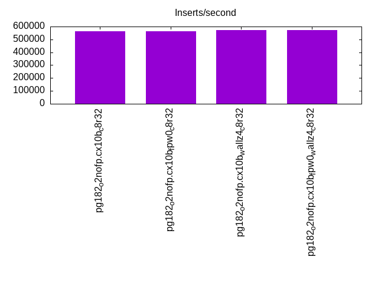
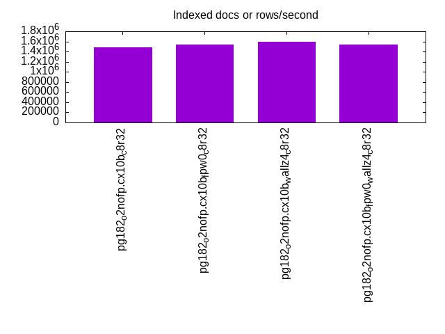
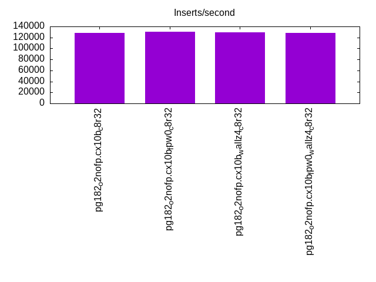
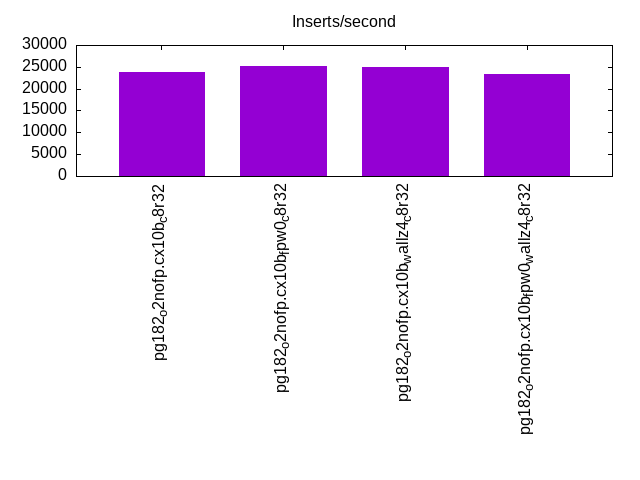
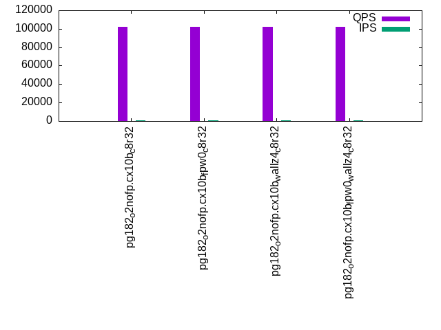
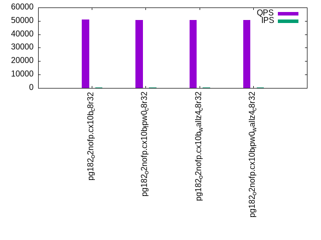
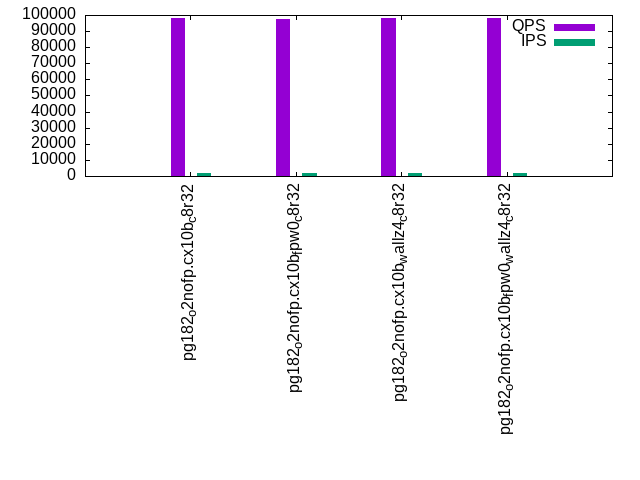
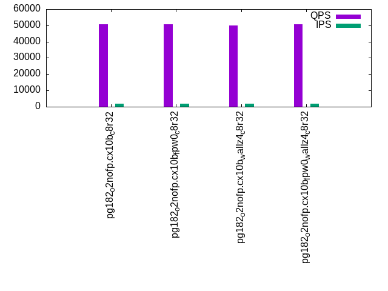
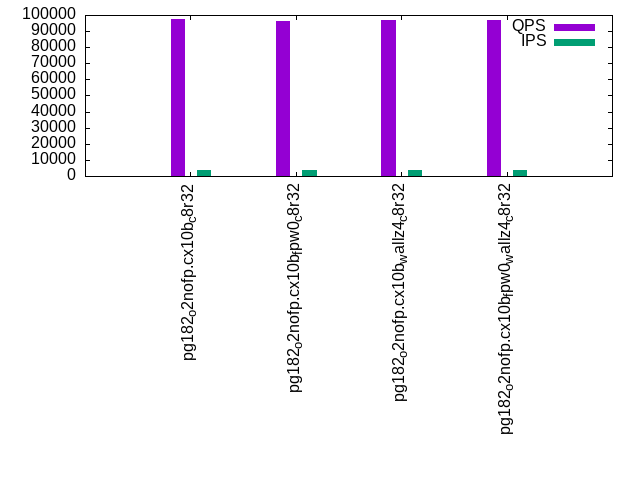
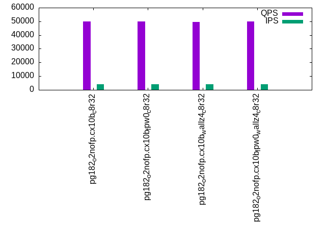

This is a report for the insert benchmark with 40M docs and 4 client(s). It is generated by scripts (bash, awk, sed) and Tufte might not be impressed. An overview of the insert benchmark is here and a short update is here. Below, by DBMS, I mean DBMS+version.config. An example is my8020.c10b40 where my means MySQL, 8020 is version 8.0.20 and c10b40 is the name for the configuration file.
The test server has 8 AMD cores, 32G RAM and an NVMe device for the database. The benchmark was run with 4 clients and there were 1 or 3 connections per client (1 for queries or inserts without rate limits, 1+1 for rate limited inserts+deletes). It uses 4 tables with a table per client. It loads 10M rows per table without secondary indexes, creates 3 secondary indexes per table, then inserts 16m+4m rows per table with a delete per insert to avoid growing the table. It then does 6 read+write tests for 1800s each that do queries as fast as possible with 100,100,500,500,1000,1000 inserts/s and the same for deletes/s per client concurrent with the queries. The database is cached by Postgres. Clients and the DBMS share one server.
The tested DBMS are:
The numbers are inserts/s for l.i0, l.i1 and l.i2, indexed docs (or rows) /s for l.x and queries/s for qr100, qp100 thru qr1000, qp1000" The values are the average rate over the entire test for inserts (IPS) and queries (QPS). The range of values for IPS and QPS is split into 3 parts: bottom 25%, middle 50%, top 25%. Values in the bottom 25% have a red background, values in the top 25% have a green background and values in the middle have no color. A gray background is used for values that can be ignored because the DBMS did not sustain the target insert rate. Red backgrounds are not used when the minimum value is within 80% of the max value.
| dbms | l.i0 | l.x | l.i1 | l.i2 | qr100 | qp100 | qr500 | qp500 | qr1000 | qp1000 |
|---|---|---|---|---|---|---|---|---|---|---|
| pg182_o2nofp.cx10b_c8r32 | 563380 | 1481485 | 127744 | 23880 | 101796 | 50972 | 98009 | 50723 | 97230 | 50086 |
| pg182_o2nofp.cx10b_fpw0_c8r32 | 563380 | 1538465 | 130879 | 25157 | 101756 | 50787 | 97470 | 50580 | 96304 | 49960 |
| pg182_o2nofp.cx10b_wallz4_c8r32 | 571428 | 1600004 | 129032 | 25039 | 102176 | 50522 | 98191 | 50070 | 96979 | 49518 |
| pg182_o2nofp.cx10b_fpw0_wallz4_c8r32 | 571428 | 1538465 | 127744 | 23392 | 102235 | 50680 | 98271 | 50544 | 96786 | 49957 |
This table has relative throughput, throughput for the DBMS relative to the DBMS in the first line, using the absolute throughput from the previous table. Values less than 0.95 have a yellow background. Values greater than 1.05 have a blue background.
| dbms | l.i0 | l.x | l.i1 | l.i2 | qr100 | qp100 | qr500 | qp500 | qr1000 | qp1000 |
|---|---|---|---|---|---|---|---|---|---|---|
| pg182_o2nofp.cx10b_c8r32 | 1.00 | 1.00 | 1.00 | 1.00 | 1.00 | 1.00 | 1.00 | 1.00 | 1.00 | 1.00 |
| pg182_o2nofp.cx10b_fpw0_c8r32 | 1.00 | 1.04 | 1.02 | 1.05 | 1.00 | 1.00 | 0.99 | 1.00 | 0.99 | 1.00 |
| pg182_o2nofp.cx10b_wallz4_c8r32 | 1.01 | 1.08 | 1.01 | 1.05 | 1.00 | 0.99 | 1.00 | 0.99 | 1.00 | 0.99 |
| pg182_o2nofp.cx10b_fpw0_wallz4_c8r32 | 1.01 | 1.04 | 1.00 | 0.98 | 1.00 | 0.99 | 1.00 | 1.00 | 1.00 | 1.00 |
This lists the average rate of inserts/s for the tests that do inserts concurrent with queries. For such tests the query rate is listed in the table above. The read+write tests are setup so that the insert rate should match the target rate every second. Cells that are not at least 95% of the target have a red background to indicate a failure to satisfy the target.
| dbms | qr100.L1 | qp100.L2 | qr500.L3 | qp500.L4 | qr1000.L5 | qp1000.L6 |
|---|---|---|---|---|---|---|
| pg182_o2nofp.cx10b_c8r32 | 399 | 399 | 1996 | 1997 | 3993 | 3993 |
| pg182_o2nofp.cx10b_fpw0_c8r32 | 399 | 399 | 1996 | 1997 | 3993 | 3991 |
| pg182_o2nofp.cx10b_wallz4_c8r32 | 399 | 399 | 1996 | 1997 | 3993 | 3991 |
| pg182_o2nofp.cx10b_fpw0_wallz4_c8r32 | 399 | 399 | 1996 | 1997 | 3993 | 3991 |
| target | 400 | 400 | 2000 | 2000 | 4000 | 4000 |
l.i0: load without secondary indexes. Graphs for performance per 1-second interval are here.
Average throughput:

Insert response time histogram: each cell has the percentage of responses that take <= the time in the header and max is the max response time in seconds. For the max column values in the top 25% of the range have a red background and in the bottom 25% of the range have a green background. The red background is not used when the min value is within 80% of the max value.
| dbms | 256us | 1ms | 4ms | 16ms | 64ms | 256ms | 1s | 4s | 16s | gt | max |
|---|---|---|---|---|---|---|---|---|---|---|---|
| pg182_o2nofp.cx10b_c8r32 | 97.462 | 2.535 | 0.003 | 0.006 | |||||||
| pg182_o2nofp.cx10b_fpw0_c8r32 | 97.617 | 2.382 | 0.001 | 0.005 | |||||||
| pg182_o2nofp.cx10b_wallz4_c8r32 | 97.564 | 2.434 | 0.002 | 0.005 | |||||||
| pg182_o2nofp.cx10b_fpw0_wallz4_c8r32 | 97.586 | 2.412 | 0.003 | 0.005 |
Performance metrics for the DBMS listed above. Some are normalized by throughput, others are not. Legend for results is here.
ips qps rps rmbps wps wmbps rpq rkbpq wpi wkbpi csps cpups cspq cpupq dbgb1 dbgb2 rss maxop p50 p99 tag 563380 0 1 0.0 1995.3 227.8 0.000 0.000 0.004 0.414 52176 59.2 0.093 8 3.8 10.4 0.3 0.006 168283 151585 pg182_o2nofp.cx10b_c8r32 563380 0 1 0.0 1998.8 228.2 0.000 0.000 0.004 0.415 51834 59.1 0.092 8 3.8 10.4 0.3 0.005 171085 153672 pg182_o2nofp.cx10b_fpw0_c8r32 571428 0 1 0.0 2009.4 229.2 0.000 0.000 0.004 0.411 51870 59.2 0.091 8 3.8 10.4 0.3 0.005 170784 142772 pg182_o2nofp.cx10b_wallz4_c8r32 571428 0 1 0.0 1999.3 228.3 0.000 0.000 0.003 0.409 51764 59.3 0.091 8 3.8 10.4 0.3 0.005 168682 153584 pg182_o2nofp.cx10b_fpw0_wallz4_c8r32
Average values from iostat.
r/s rkB/s rrqm/s %rrqm r_await rareq-s w/s wkB/s wrqm/s %wrqm w_await wareq-s d/s dkB/s drqm/s %drqm d_await dareq-s f/s f_await aqu-sz %util 0.969 3.876 0.000 0.000 0.122 4.000 2103.6 246103 127.1 6.152 0.496 116.3 0.400 7.017 0.000 0.000 0.675 6.053 108.6 1.545 1.258 29.42 pg182_o2nofp.cx10b_c8r32 1.092 4.369 0.000 0.000 0.168 4.000 2106.7 246478 144.1 6.776 0.470 116.4 0.615 8.615 0.000 0.000 0.328 7.148 108.3 1.546 1.189 29.60 pg182_o2nofp.cx10b_fpw0_c8r32 0.969 3.877 0.000 0.000 0.141 4.000 2118.2 247547 144.0 6.762 0.469 116.2 0.477 8.554 0.000 0.000 0.582 10.14 108.6 1.542 1.253 29.37 pg182_o2nofp.cx10b_wallz4_c8r32 1.169 4.677 0.000 0.000 0.153 4.000 2107.8 246554 145.6 6.893 0.543 116.3 0.400 3.754 0.000 0.000 0.625 3.668 107.1 1.818 1.491 32.85 pg182_o2nofp.cx10b_fpw0_wallz4_c8r32
l.x: create secondary indexes.
Average throughput:

Performance metrics for the DBMS listed above. Some are normalized by throughput, others are not. Legend for results is here.
ips qps rps rmbps wps wmbps rpq rkbpq wpi wkbpi csps cpups cspq cpupq dbgb1 dbgb2 rss maxop p50 p99 tag 1481485 0 2 0.0 3617.6 444.0 0.000 0.000 0.002 0.307 7608 32.0 0.005 2 7.7 17.7 0.0 0.002 NA NA pg182_o2nofp.cx10b_c8r32 1538465 0 2 0.0 3605.4 441.9 0.000 0.000 0.002 0.294 7774 32.5 0.005 2 7.7 17.7 0.0 0.002 NA NA pg182_o2nofp.cx10b_fpw0_c8r32 1600004 0 2 0.0 3283.2 403.5 0.000 0.000 0.002 0.258 5186 33.5 0.003 2 7.7 16.3 0.0 0.002 NA NA pg182_o2nofp.cx10b_wallz4_c8r32 1538465 0 2 0.0 3131.8 384.3 0.000 0.000 0.002 0.256 5250 33.3 0.003 2 7.7 16.3 0.0 0.002 NA NA pg182_o2nofp.cx10b_fpw0_wallz4_c8r32
Average values from iostat.
r/s rkB/s rrqm/s %rrqm r_await rareq-s w/s wkB/s wrqm/s %wrqm w_await wareq-s d/s dkB/s drqm/s %drqm d_await dareq-s f/s f_await aqu-sz %util 2.550 10.20 0.000 0.000 0.237 4.000 3982.2 500959 146.9 3.737 1.058 125.7 4.150 53821.2 0.000 0.000 2.433 7459.5 44.10 1.942 4.488 27.83 pg182_o2nofp.cx10b_c8r32 2.200 8.800 0.000 0.000 0.245 4.000 3973.4 499445 154.4 3.850 0.955 125.6 5.200 53416.4 0.000 0.000 1.487 5492.6 46.35 1.292 3.998 25.14 pg182_o2nofp.cx10b_fpw0_c8r32 2.300 9.200 0.000 0.000 0.223 4.000 4100.3 516393 105.1 2.665 0.890 125.8 4.600 83136.0 0.000 0.000 1.370 13384.0 28.95 1.637 3.625 20.80 pg182_o2nofp.cx10b_wallz4_c8r32 2.400 9.600 0.000 0.000 0.300 4.000 3371.3 424903 102.2 3.280 1.017 125.8 5.050 80867.0 0.000 0.000 1.370 14894.1 29.15 1.732 3.565 19.46 pg182_o2nofp.cx10b_fpw0_wallz4_c8r32
l.i1: continue load after secondary indexes created with 50 inserts per transaction. Graphs for performance per 1-second interval are here.
Average throughput:

Insert response time histogram: each cell has the percentage of responses that take <= the time in the header and max is the max response time in seconds. For the max column values in the top 25% of the range have a red background and in the bottom 25% of the range have a green background. The red background is not used when the min value is within 80% of the max value.
| dbms | 256us | 1ms | 4ms | 16ms | 64ms | 256ms | 1s | 4s | 16s | gt | max |
|---|---|---|---|---|---|---|---|---|---|---|---|
| pg182_o2nofp.cx10b_c8r32 | 68.852 | 31.056 | 0.059 | 0.033 | 0.059 | ||||||
| pg182_o2nofp.cx10b_fpw0_c8r32 | 67.983 | 31.954 | 0.062 | 0.001 | 0.043 | ||||||
| pg182_o2nofp.cx10b_wallz4_c8r32 | 68.324 | 31.601 | 0.057 | 0.018 | 0.060 | ||||||
| pg182_o2nofp.cx10b_fpw0_wallz4_c8r32 | 70.488 | 29.468 | 0.043 | 0.001 | 0.042 |
Delete response time histogram: each cell has the percentage of responses that take <= the time in the header and max is the max response time in seconds. For the max column values in the top 25% of the range have a red background and in the bottom 25% of the range have a green background. The red background is not used when the min value is within 80% of the max value.
| dbms | 256us | 1ms | 4ms | 16ms | 64ms | 256ms | 1s | 4s | 16s | gt | max |
|---|---|---|---|---|---|---|---|---|---|---|---|
| pg182_o2nofp.cx10b_c8r32 | 0.006 | 42.328 | 57.285 | 0.342 | 0.040 | nonzero | 0.066 | ||||
| pg182_o2nofp.cx10b_fpw0_c8r32 | 0.004 | 38.406 | 61.461 | 0.128 | 0.001 | 0.024 | |||||
| pg182_o2nofp.cx10b_wallz4_c8r32 | 0.003 | 42.241 | 57.527 | 0.212 | 0.018 | 0.047 | |||||
| pg182_o2nofp.cx10b_fpw0_wallz4_c8r32 | 0.006 | 43.741 | 56.009 | 0.243 | nonzero | 0.040 |
Performance metrics for the DBMS listed above. Some are normalized by throughput, others are not. Legend for results is here.
ips qps rps rmbps wps wmbps rpq rkbpq wpi wkbpi csps cpups cspq cpupq dbgb1 dbgb2 rss maxop p50 p99 tag 127744 0 1 0.0 1689.5 186.4 0.000 0.000 0.013 1.494 37184 81.7 0.291 51 10.8 50.9 6.3 0.059 29397 6448 pg182_o2nofp.cx10b_c8r32 130879 0 0 0.0 1475.6 162.2 0.000 0.000 0.011 1.269 37720 82.4 0.288 50 10.8 50.8 10.8 0.043 30147 14637 pg182_o2nofp.cx10b_fpw0_c8r32 129032 0 0 0.0 1601.9 176.4 0.000 0.000 0.012 1.400 36979 82.3 0.287 51 10.8 50.9 9.0 0.060 29847 13994 pg182_o2nofp.cx10b_wallz4_c8r32 127744 0 1 0.0 1448.6 160.3 0.000 0.000 0.011 1.285 37425 80.9 0.293 51 10.8 50.7 10.2 0.042 31297 13446 pg182_o2nofp.cx10b_fpw0_wallz4_c8r32
Average values from iostat.
r/s rkB/s rrqm/s %rrqm r_await rareq-s w/s wkB/s wrqm/s %wrqm w_await wareq-s d/s dkB/s drqm/s %drqm d_await dareq-s f/s f_await aqu-sz %util 0.554 2.214 0.000 0.000 0.168 3.152 1687.0 190467 100.7 5.612 0.437 112.0 0.099 179.8 0.000 0.000 0.164 300.6 109.0 1.675 0.939 29.05 pg182_o2nofp.cx10b_c8r32 0.492 1.967 0.000 0.000 0.150 3.583 1470.6 165339 91.87 5.944 0.406 112.1 0.100 89.76 0.000 0.000 0.085 165.3 97.16 1.664 0.766 26.03 pg182_o2nofp.cx10b_fpw0_c8r32 0.443 1.771 0.000 0.000 0.118 3.306 1607.3 181256 104.5 6.303 0.428 111.9 0.135 146.2 0.000 0.000 0.201 30.11 104.2 1.709 0.863 28.78 pg182_o2nofp.cx10b_wallz4_c8r32 0.568 2.271 0.000 0.000 0.176 4.000 1446.1 163756 84.35 5.613 0.371 113.2 0.065 143.6 0.000 0.000 0.112 369.8 88.12 1.621 0.687 22.86 pg182_o2nofp.cx10b_fpw0_wallz4_c8r32
l.i2: continue load after secondary indexes created with 5 inserts per transaction. Graphs for performance per 1-second interval are here.
Average throughput:

Insert response time histogram: each cell has the percentage of responses that take <= the time in the header and max is the max response time in seconds. For the max column values in the top 25% of the range have a red background and in the bottom 25% of the range have a green background. The red background is not used when the min value is within 80% of the max value.
| dbms | 256us | 1ms | 4ms | 16ms | 64ms | 256ms | 1s | 4s | 16s | gt | max |
|---|---|---|---|---|---|---|---|---|---|---|---|
| pg182_o2nofp.cx10b_c8r32 | 97.089 | 2.893 | 0.018 | nonzero | 0.017 | ||||||
| pg182_o2nofp.cx10b_fpw0_c8r32 | 97.691 | 2.294 | 0.016 | nonzero | 0.006 | ||||||
| pg182_o2nofp.cx10b_wallz4_c8r32 | 97.537 | 2.446 | 0.017 | nonzero | nonzero | 0.018 | |||||
| pg182_o2nofp.cx10b_fpw0_wallz4_c8r32 | 97.377 | 2.609 | 0.013 | 0.004 |
Delete response time histogram: each cell has the percentage of responses that take <= the time in the header and max is the max response time in seconds. For the max column values in the top 25% of the range have a red background and in the bottom 25% of the range have a green background. The red background is not used when the min value is within 80% of the max value.
| dbms | 256us | 1ms | 4ms | 16ms | 64ms | 256ms | 1s | 4s | 16s | gt | max |
|---|---|---|---|---|---|---|---|---|---|---|---|
| pg182_o2nofp.cx10b_c8r32 | 7.975 | 60.174 | 31.850 | nonzero | nonzero | 0.017 | |||||
| pg182_o2nofp.cx10b_fpw0_c8r32 | 7.206 | 62.992 | 29.801 | nonzero | 0.007 | ||||||
| pg182_o2nofp.cx10b_wallz4_c8r32 | 7.032 | 62.131 | 30.837 | nonzero | nonzero | 0.018 | |||||
| pg182_o2nofp.cx10b_fpw0_wallz4_c8r32 | 7.309 | 66.585 | 26.105 | 0.001 | 0.010 |
Performance metrics for the DBMS listed above. Some are normalized by throughput, others are not. Legend for results is here.
ips qps rps rmbps wps wmbps rpq rkbpq wpi wkbpi csps cpups cspq cpupq dbgb1 dbgb2 rss maxop p50 p99 tag 23880 0 0 0.0 212.6 22.3 0.000 0.000 0.009 0.955 84123 63.5 3.523 213 10.9 50.9 0.3 0.017 4510 2130 pg182_o2nofp.cx10b_c8r32 25157 0 0 0.0 165.4 18.8 0.000 0.000 0.007 0.766 88387 65.6 3.513 209 10.9 50.9 0.6 0.006 5289 3349 pg182_o2nofp.cx10b_fpw0_c8r32 25039 0 0 0.0 190.8 21.5 0.000 0.000 0.008 0.879 88339 64.8 3.528 207 10.9 50.9 10.6 0.018 4684 3110 pg182_o2nofp.cx10b_wallz4_c8r32 23392 0 0 0.0 155.5 16.8 0.000 0.000 0.007 0.736 83405 61.8 3.566 211 10.9 50.9 0.8 0.004 5100 3220 pg182_o2nofp.cx10b_fpw0_wallz4_c8r32
Average values from iostat.
r/s rkB/s rrqm/s %rrqm r_await rareq-s w/s wkB/s wrqm/s %wrqm w_await wareq-s d/s dkB/s drqm/s %drqm d_await dareq-s f/s f_await aqu-sz %util 0.002 0.006 0.000 0.000 0.000 0.030 212.7 22785.1 12.05 2.758 0.275 108.4 0.110 60.42 0.000 0.000 0.018 27.66 20.82 1.625 0.099 5.125 pg182_o2nofp.cx10b_c8r32 0.003 0.013 0.000 0.000 0.000 0.063 166.0 19324.0 3.386 2.126 0.240 116.3 0.006 0.559 0.000 0.000 0.011 0.952 13.19 1.661 0.060 2.771 pg182_o2nofp.cx10b_fpw0_c8r32 0.002 0.006 0.000 0.000 0.000 0.032 189.6 21851.0 3.332 1.877 0.225 115.0 0.008 21.43 0.000 0.000 0.012 64.54 15.64 1.623 0.067 3.198 pg182_o2nofp.cx10b_wallz4_c8r32 0.003 0.012 0.000 0.000 0.030 0.059 155.0 17150.2 12.20 3.576 0.325 113.4 0.041 32.98 0.000 0.000 0.005 7.652 17.30 1.684 0.088 4.469 pg182_o2nofp.cx10b_fpw0_wallz4_c8r32
qr100.L1: range queries with 100 insert/s per client. Graphs for performance per 1-second interval are here.
Average throughput:

Query response time histogram: each cell has the percentage of responses that take <= the time in the header and max is the max response time in seconds. For max values in the top 25% of the range have a red background and in the bottom 25% of the range have a green background. The red background is not used when the min value is within 80% of the max value.
| dbms | 256us | 1ms | 4ms | 16ms | 64ms | 256ms | 1s | 4s | 16s | gt | max |
|---|---|---|---|---|---|---|---|---|---|---|---|
| pg182_o2nofp.cx10b_c8r32 | 99.993 | 0.007 | nonzero | 0.002 | |||||||
| pg182_o2nofp.cx10b_fpw0_c8r32 | 99.994 | 0.006 | 0.001 | ||||||||
| pg182_o2nofp.cx10b_wallz4_c8r32 | 99.994 | 0.006 | nonzero | 0.001 | |||||||
| pg182_o2nofp.cx10b_fpw0_wallz4_c8r32 | 99.993 | 0.007 | nonzero | 0.001 |
Insert response time histogram: each cell has the percentage of responses that take <= the time in the header and max is the max response time in seconds. For max values in the top 25% of the range have a red background and in the bottom 25% of the range have a green background. The red background is not used when the min value is within 80% of the max value.
| dbms | 256us | 1ms | 4ms | 16ms | 64ms | 256ms | 1s | 4s | 16s | gt | max |
|---|---|---|---|---|---|---|---|---|---|---|---|
| pg182_o2nofp.cx10b_c8r32 | 74.299 | 25.674 | 0.028 | 0.004 | |||||||
| pg182_o2nofp.cx10b_fpw0_c8r32 | 87.028 | 12.965 | 0.007 | 0.004 | |||||||
| pg182_o2nofp.cx10b_wallz4_c8r32 | 31.167 | 68.778 | 0.056 | 0.006 | |||||||
| pg182_o2nofp.cx10b_fpw0_wallz4_c8r32 | 85.903 | 14.076 | 0.021 | 0.004 |
Delete response time histogram: each cell has the percentage of responses that take <= the time in the header and max is the max response time in seconds. For max values in the top 25% of the range have a red background and in the bottom 25% of the range have a green background. The red background is not used when the min value is within 80% of the max value.
| dbms | 256us | 1ms | 4ms | 16ms | 64ms | 256ms | 1s | 4s | 16s | gt | max |
|---|---|---|---|---|---|---|---|---|---|---|---|
| pg182_o2nofp.cx10b_c8r32 | 98.493 | 1.507 | 0.002 | ||||||||
| pg182_o2nofp.cx10b_fpw0_c8r32 | 0.028 | 99.104 | 0.868 | 0.002 | |||||||
| pg182_o2nofp.cx10b_wallz4_c8r32 | 97.951 | 2.049 | 0.003 | ||||||||
| pg182_o2nofp.cx10b_fpw0_wallz4_c8r32 | 0.014 | 98.896 | 1.090 | 0.003 |
Performance metrics for the DBMS listed above. Some are normalized by throughput, others are not. Legend for results is here.
ips qps rps rmbps wps wmbps rpq rkbpq wpi wkbpi csps cpups cspq cpupq dbgb1 dbgb2 rss maxop p50 p99 tag 399 101796 0 0.0 21.7 1.7 0.000 0.000 0.054 4.424 388287 41.4 3.814 33 10.9 50.9 0.2 0.002 25501 24941 pg182_o2nofp.cx10b_c8r32 399 101756 0 0.0 8.7 0.3 0.000 0.000 0.022 0.812 388054 41.4 3.814 33 10.9 50.9 0.2 0.001 25469 24413 pg182_o2nofp.cx10b_fpw0_c8r32 399 102176 0 0.0 17.0 1.2 0.000 0.000 0.042 3.176 389673 41.1 3.814 32 10.9 50.9 0.2 0.001 25549 24989 pg182_o2nofp.cx10b_wallz4_c8r32 399 102235 0 0.0 8.5 0.3 0.000 0.000 0.021 0.804 390103 41.5 3.816 32 10.9 50.9 0.2 0.001 25661 25053 pg182_o2nofp.cx10b_fpw0_wallz4_c8r32
Average values from iostat.
r/s rkB/s rrqm/s %rrqm r_await rareq-s w/s wkB/s wrqm/s %wrqm w_await wareq-s d/s dkB/s drqm/s %drqm d_await dareq-s f/s f_await aqu-sz %util 0.000 0.000 0.000 0.000 0.000 0.000 21.63 1761.0 0.388 2.023 1.725 74.05 0.001 0.002 0.000 0.000 0.003 0.011 4.176 2.220 0.040 1.902 pg182_o2nofp.cx10b_c8r32 0.000 0.000 0.000 0.000 0.000 0.000 8.711 324.7 0.295 3.262 2.047 31.08 0.001 0.002 0.000 0.000 0.000 0.011 3.229 2.266 0.024 1.887 pg182_o2nofp.cx10b_fpw0_c8r32 0.000 0.000 0.000 0.000 0.000 0.000 16.93 1265.1 0.342 2.237 1.867 67.59 0.001 0.002 0.000 0.000 0.003 0.011 3.751 2.229 0.036 1.579 pg182_o2nofp.cx10b_wallz4_c8r32 0.000 0.000 0.000 0.000 0.000 0.000 8.544 321.4 0.295 3.352 2.067 31.49 0.001 0.002 0.000 0.000 0.003 0.011 3.189 2.302 0.023 1.742 pg182_o2nofp.cx10b_fpw0_wallz4_c8r32
qp100.L2: point queries with 100 insert/s per client. Graphs for performance per 1-second interval are here.
Average throughput:

Query response time histogram: each cell has the percentage of responses that take <= the time in the header and max is the max response time in seconds. For max values in the top 25% of the range have a red background and in the bottom 25% of the range have a green background. The red background is not used when the min value is within 80% of the max value.
| dbms | 256us | 1ms | 4ms | 16ms | 64ms | 256ms | 1s | 4s | 16s | gt | max |
|---|---|---|---|---|---|---|---|---|---|---|---|
| pg182_o2nofp.cx10b_c8r32 | 99.959 | 0.041 | nonzero | 0.002 | |||||||
| pg182_o2nofp.cx10b_fpw0_c8r32 | 99.964 | 0.036 | nonzero | 0.001 | |||||||
| pg182_o2nofp.cx10b_wallz4_c8r32 | 99.960 | 0.040 | nonzero | 0.003 | |||||||
| pg182_o2nofp.cx10b_fpw0_wallz4_c8r32 | 99.957 | 0.043 | nonzero | 0.001 |
Insert response time histogram: each cell has the percentage of responses that take <= the time in the header and max is the max response time in seconds. For max values in the top 25% of the range have a red background and in the bottom 25% of the range have a green background. The red background is not used when the min value is within 80% of the max value.
| dbms | 256us | 1ms | 4ms | 16ms | 64ms | 256ms | 1s | 4s | 16s | gt | max |
|---|---|---|---|---|---|---|---|---|---|---|---|
| pg182_o2nofp.cx10b_c8r32 | 60.535 | 39.424 | 0.042 | 0.005 | |||||||
| pg182_o2nofp.cx10b_fpw0_c8r32 | 72.181 | 27.806 | 0.014 | 0.005 | |||||||
| pg182_o2nofp.cx10b_wallz4_c8r32 | 21.799 | 78.146 | 0.056 | 0.005 | |||||||
| pg182_o2nofp.cx10b_fpw0_wallz4_c8r32 | 73.417 | 26.556 | 0.028 | 0.004 |
Delete response time histogram: each cell has the percentage of responses that take <= the time in the header and max is the max response time in seconds. For max values in the top 25% of the range have a red background and in the bottom 25% of the range have a green background. The red background is not used when the min value is within 80% of the max value.
| dbms | 256us | 1ms | 4ms | 16ms | 64ms | 256ms | 1s | 4s | 16s | gt | max |
|---|---|---|---|---|---|---|---|---|---|---|---|
| pg182_o2nofp.cx10b_c8r32 | 17.576 | 82.417 | 0.007 | 0.004 | |||||||
| pg182_o2nofp.cx10b_fpw0_c8r32 | 19.764 | 80.229 | 0.007 | 0.004 | |||||||
| pg182_o2nofp.cx10b_wallz4_c8r32 | 16.826 | 83.167 | 0.007 | 0.004 | |||||||
| pg182_o2nofp.cx10b_fpw0_wallz4_c8r32 | 20.319 | 79.674 | 0.007 | 0.004 |
Performance metrics for the DBMS listed above. Some are normalized by throughput, others are not. Legend for results is here.
ips qps rps rmbps wps wmbps rpq rkbpq wpi wkbpi csps cpups cspq cpupq dbgb1 dbgb2 rss maxop p50 p99 tag 399 50972 0 0.0 56.0 3.6 0.000 0.000 0.140 9.178 196467 45.1 3.854 71 10.9 50.7 0.2 0.002 12815 12735 pg182_o2nofp.cx10b_c8r32 399 50787 0 0.0 44.4 2.3 0.000 0.000 0.111 6.020 195718 44.7 3.854 70 10.9 50.6 0.3 0.001 12751 12687 pg182_o2nofp.cx10b_fpw0_c8r32 399 50522 0 0.0 51.8 3.2 0.000 0.000 0.130 8.149 194742 44.7 3.855 71 10.9 49.3 0.2 0.003 12751 12670 pg182_o2nofp.cx10b_wallz4_c8r32 399 50680 0 0.0 44.4 2.3 0.000 0.000 0.111 6.012 195345 44.5 3.854 70 10.9 50.6 0.2 0.001 12734 12655 pg182_o2nofp.cx10b_fpw0_wallz4_c8r32
Average values from iostat.
r/s rkB/s rrqm/s %rrqm r_await rareq-s w/s wkB/s wrqm/s %wrqm w_await wareq-s d/s dkB/s drqm/s %drqm d_await dareq-s f/s f_await aqu-sz %util 0.000 0.000 0.000 0.000 0.000 0.000 55.72 3633.9 1.299 2.470 0.422 65.48 0.012 118.8 0.000 0.000 0.018 39.67 3.952 1.766 0.024 1.082 pg182_o2nofp.cx10b_c8r32 0.000 0.000 0.000 0.000 0.000 0.000 44.43 2403.2 1.032 3.238 0.457 54.69 0.013 182.7 0.000 0.000 0.004 41.53 3.071 1.886 0.019 0.928 pg182_o2nofp.cx10b_fpw0_c8r32 0.000 0.000 0.000 0.000 0.000 0.000 51.70 3237.6 1.478 2.842 0.436 62.91 0.066 958.5 0.000 0.000 0.005 40.97 3.523 1.845 0.022 1.093 pg182_o2nofp.cx10b_wallz4_c8r32 0.000 0.000 0.000 0.000 0.000 0.000 44.36 2399.8 1.023 3.422 0.439 54.44 0.018 182.7 0.000 0.000 0.019 38.16 3.082 1.822 0.018 1.013 pg182_o2nofp.cx10b_fpw0_wallz4_c8r32
qr500.L3: range queries with 500 insert/s per client. Graphs for performance per 1-second interval are here.
Average throughput:

Query response time histogram: each cell has the percentage of responses that take <= the time in the header and max is the max response time in seconds. For max values in the top 25% of the range have a red background and in the bottom 25% of the range have a green background. The red background is not used when the min value is within 80% of the max value.
| dbms | 256us | 1ms | 4ms | 16ms | 64ms | 256ms | 1s | 4s | 16s | gt | max |
|---|---|---|---|---|---|---|---|---|---|---|---|
| pg182_o2nofp.cx10b_c8r32 | 99.989 | 0.010 | nonzero | nonzero | 0.012 | ||||||
| pg182_o2nofp.cx10b_fpw0_c8r32 | 99.990 | 0.010 | nonzero | nonzero | 0.005 | ||||||
| pg182_o2nofp.cx10b_wallz4_c8r32 | 99.989 | 0.011 | nonzero | nonzero | 0.010 | ||||||
| pg182_o2nofp.cx10b_fpw0_wallz4_c8r32 | 99.988 | 0.012 | nonzero | 0.003 |
Insert response time histogram: each cell has the percentage of responses that take <= the time in the header and max is the max response time in seconds. For max values in the top 25% of the range have a red background and in the bottom 25% of the range have a green background. The red background is not used when the min value is within 80% of the max value.
| dbms | 256us | 1ms | 4ms | 16ms | 64ms | 256ms | 1s | 4s | 16s | gt | max |
|---|---|---|---|---|---|---|---|---|---|---|---|
| pg182_o2nofp.cx10b_c8r32 | 90.212 | 9.710 | 0.076 | 0.001 | 0.017 | ||||||
| pg182_o2nofp.cx10b_fpw0_c8r32 | 90.939 | 8.982 | 0.079 | 0.007 | |||||||
| pg182_o2nofp.cx10b_wallz4_c8r32 | 78.179 | 21.576 | 0.243 | 0.001 | 0.018 | ||||||
| pg182_o2nofp.cx10b_fpw0_wallz4_c8r32 | 91.497 | 8.471 | 0.032 | 0.008 |
Delete response time histogram: each cell has the percentage of responses that take <= the time in the header and max is the max response time in seconds. For max values in the top 25% of the range have a red background and in the bottom 25% of the range have a green background. The red background is not used when the min value is within 80% of the max value.
| dbms | 256us | 1ms | 4ms | 16ms | 64ms | 256ms | 1s | 4s | 16s | gt | max |
|---|---|---|---|---|---|---|---|---|---|---|---|
| pg182_o2nofp.cx10b_c8r32 | 0.264 | 71.756 | 27.831 | 0.150 | 0.014 | ||||||
| pg182_o2nofp.cx10b_fpw0_c8r32 | 0.172 | 66.119 | 33.443 | 0.265 | 0.008 | ||||||
| pg182_o2nofp.cx10b_wallz4_c8r32 | 0.094 | 63.346 | 36.367 | 0.193 | 0.013 | ||||||
| pg182_o2nofp.cx10b_fpw0_wallz4_c8r32 | 0.231 | 69.482 | 30.221 | 0.067 | 0.006 |
Performance metrics for the DBMS listed above. Some are normalized by throughput, others are not. Legend for results is here.
ips qps rps rmbps wps wmbps rpq rkbpq wpi wkbpi csps cpups cspq cpupq dbgb1 dbgb2 rss maxop p50 p99 tag 1996 98009 0 0.0 90.3 5.1 0.000 0.000 0.045 2.601 373232 42.8 3.808 35 11.0 48.3 0.2 0.012 24525 22797 pg182_o2nofp.cx10b_c8r32 1996 97470 0 0.0 70.3 2.9 0.000 0.000 0.035 1.486 371358 42.7 3.810 35 11.0 50.4 0.2 0.005 24494 23165 pg182_o2nofp.cx10b_fpw0_c8r32 1996 98191 0 0.0 83.3 4.2 0.000 0.000 0.042 2.180 373367 42.4 3.802 35 11.0 47.6 0.2 0.010 24861 23373 pg182_o2nofp.cx10b_wallz4_c8r32 1996 98271 0 0.0 69.9 2.9 0.000 0.000 0.035 1.483 374214 42.8 3.808 35 11.0 50.4 0.2 0.003 24669 23406 pg182_o2nofp.cx10b_fpw0_wallz4_c8r32
Average values from iostat.
r/s rkB/s rrqm/s %rrqm r_await rareq-s w/s wkB/s wrqm/s %wrqm w_await wareq-s d/s dkB/s drqm/s %drqm d_await dareq-s f/s f_await aqu-sz %util 0.001 0.002 0.000 0.000 0.006 0.011 90.02 5151.5 2.262 2.286 0.577 56.09 0.096 1460.5 0.000 0.000 0.018 43.52 4.938 1.741 0.050 1.567 pg182_o2nofp.cx10b_c8r32 0.000 0.000 0.000 0.000 0.000 0.000 70.36 2966.4 1.636 2.830 0.594 51.45 0.015 191.8 0.000 0.000 0.002 36.89 3.042 1.768 0.038 1.132 pg182_o2nofp.cx10b_fpw0_c8r32 0.000 0.000 0.000 0.000 0.000 0.000 83.20 4328.4 2.030 2.403 0.577 54.06 0.074 1040.7 0.000 0.000 0.016 42.05 4.522 1.746 0.045 1.433 pg182_o2nofp.cx10b_wallz4_c8r32 0.000 0.000 0.000 0.000 0.000 0.000 69.99 2960.5 1.607 2.847 0.611 51.47 0.019 191.8 0.000 0.000 0.026 40.03 3.001 1.831 0.039 1.124 pg182_o2nofp.cx10b_fpw0_wallz4_c8r32
qp500.L4: point queries with 500 insert/s per client. Graphs for performance per 1-second interval are here.
Average throughput:

Query response time histogram: each cell has the percentage of responses that take <= the time in the header and max is the max response time in seconds. For max values in the top 25% of the range have a red background and in the bottom 25% of the range have a green background. The red background is not used when the min value is within 80% of the max value.
| dbms | 256us | 1ms | 4ms | 16ms | 64ms | 256ms | 1s | 4s | 16s | gt | max |
|---|---|---|---|---|---|---|---|---|---|---|---|
| pg182_o2nofp.cx10b_c8r32 | 99.955 | 0.045 | nonzero | nonzero | 0.004 | ||||||
| pg182_o2nofp.cx10b_fpw0_c8r32 | 99.958 | 0.042 | nonzero | nonzero | 0.027 | ||||||
| pg182_o2nofp.cx10b_wallz4_c8r32 | 99.952 | 0.047 | nonzero | nonzero | 0.004 | ||||||
| pg182_o2nofp.cx10b_fpw0_wallz4_c8r32 | 99.952 | 0.048 | nonzero | nonzero | 0.004 |
Insert response time histogram: each cell has the percentage of responses that take <= the time in the header and max is the max response time in seconds. For max values in the top 25% of the range have a red background and in the bottom 25% of the range have a green background. The red background is not used when the min value is within 80% of the max value.
| dbms | 256us | 1ms | 4ms | 16ms | 64ms | 256ms | 1s | 4s | 16s | gt | max |
|---|---|---|---|---|---|---|---|---|---|---|---|
| pg182_o2nofp.cx10b_c8r32 | 88.731 | 11.153 | 0.117 | 0.010 | |||||||
| pg182_o2nofp.cx10b_fpw0_c8r32 | 89.496 | 10.463 | 0.042 | 0.008 | |||||||
| pg182_o2nofp.cx10b_wallz4_c8r32 | 79.676 | 20.143 | 0.181 | 0.009 | |||||||
| pg182_o2nofp.cx10b_fpw0_wallz4_c8r32 | 90.008 | 9.954 | 0.037 | 0.006 |
Delete response time histogram: each cell has the percentage of responses that take <= the time in the header and max is the max response time in seconds. For max values in the top 25% of the range have a red background and in the bottom 25% of the range have a green background. The red background is not used when the min value is within 80% of the max value.
| dbms | 256us | 1ms | 4ms | 16ms | 64ms | 256ms | 1s | 4s | 16s | gt | max |
|---|---|---|---|---|---|---|---|---|---|---|---|
| pg182_o2nofp.cx10b_c8r32 | 0.221 | 59.799 | 39.842 | 0.139 | 0.008 | ||||||
| pg182_o2nofp.cx10b_fpw0_c8r32 | 0.143 | 59.519 | 40.289 | 0.049 | 0.008 | ||||||
| pg182_o2nofp.cx10b_wallz4_c8r32 | 0.106 | 58.464 | 41.264 | 0.167 | 0.010 | ||||||
| pg182_o2nofp.cx10b_fpw0_wallz4_c8r32 | 0.175 | 61.301 | 38.458 | 0.065 | 0.007 |
Performance metrics for the DBMS listed above. Some are normalized by throughput, others are not. Legend for results is here.
ips qps rps rmbps wps wmbps rpq rkbpq wpi wkbpi csps cpups cspq cpupq dbgb1 dbgb2 rss maxop p50 p99 tag 1997 50723 0 0.0 59.3 5.5 0.000 0.000 0.030 2.814 195160 46.3 3.848 73 11.0 44.7 0.3 0.004 12719 12255 pg182_o2nofp.cx10b_c8r32 1997 50580 0 0.0 44.2 3.9 0.000 0.000 0.022 2.003 194369 46.0 3.843 73 10.9 48.7 10.7 0.027 12686 12511 pg182_o2nofp.cx10b_fpw0_c8r32 1997 50070 0 0.0 54.5 4.9 0.000 0.000 0.027 2.526 192490 45.5 3.844 73 11.0 44.1 0.3 0.004 12591 12223 pg182_o2nofp.cx10b_wallz4_c8r32 1997 50544 0 0.0 44.3 3.9 0.000 0.000 0.022 2.004 194355 45.8 3.845 72 11.0 48.7 0.3 0.004 12671 12447 pg182_o2nofp.cx10b_fpw0_wallz4_c8r32
Average values from iostat.
r/s rkB/s rrqm/s %rrqm r_await rareq-s w/s wkB/s wrqm/s %wrqm w_await wareq-s d/s dkB/s drqm/s %drqm d_await dareq-s f/s f_await aqu-sz %util 0.000 0.000 0.000 0.000 0.000 0.000 58.95 5578.0 2.364 2.389 0.448 93.89 0.138 2117.7 0.000 0.000 0.004 43.05 5.002 1.836 0.030 1.371 pg182_o2nofp.cx10b_c8r32 0.000 0.000 0.000 0.000 0.000 0.000 44.22 3999.2 1.555 2.804 0.414 93.11 0.065 1007.0 0.000 0.000 0.010 108.6 3.544 1.879 0.020 1.094 pg182_o2nofp.cx10b_fpw0_c8r32 0.000 0.000 0.000 0.000 0.000 0.000 54.32 5026.4 2.334 2.960 0.418 92.72 0.132 2044.7 0.000 0.000 0.007 86.59 4.776 1.821 0.026 1.329 pg182_o2nofp.cx10b_wallz4_c8r32 0.000 0.000 0.000 0.000 0.000 0.000 44.31 4001.7 1.594 2.896 0.429 93.21 0.065 985.9 0.000 0.000 0.005 42.51 3.572 1.922 0.020 1.071 pg182_o2nofp.cx10b_fpw0_wallz4_c8r32
qr1000.L5: range queries with 1000 insert/s per client. Graphs for performance per 1-second interval are here.
Average throughput:

Query response time histogram: each cell has the percentage of responses that take <= the time in the header and max is the max response time in seconds. For max values in the top 25% of the range have a red background and in the bottom 25% of the range have a green background. The red background is not used when the min value is within 80% of the max value.
| dbms | 256us | 1ms | 4ms | 16ms | 64ms | 256ms | 1s | 4s | 16s | gt | max |
|---|---|---|---|---|---|---|---|---|---|---|---|
| pg182_o2nofp.cx10b_c8r32 | 99.984 | 0.015 | nonzero | nonzero | nonzero | 0.023 | |||||
| pg182_o2nofp.cx10b_fpw0_c8r32 | 99.985 | 0.015 | nonzero | nonzero | nonzero | 0.023 | |||||
| pg182_o2nofp.cx10b_wallz4_c8r32 | 99.983 | 0.017 | nonzero | nonzero | 0.004 | ||||||
| pg182_o2nofp.cx10b_fpw0_wallz4_c8r32 | 99.983 | 0.016 | nonzero | nonzero | nonzero | 0.023 |
Insert response time histogram: each cell has the percentage of responses that take <= the time in the header and max is the max response time in seconds. For max values in the top 25% of the range have a red background and in the bottom 25% of the range have a green background. The red background is not used when the min value is within 80% of the max value.
| dbms | 256us | 1ms | 4ms | 16ms | 64ms | 256ms | 1s | 4s | 16s | gt | max |
|---|---|---|---|---|---|---|---|---|---|---|---|
| pg182_o2nofp.cx10b_c8r32 | 88.835 | 10.969 | 0.197 | 0.013 | |||||||
| pg182_o2nofp.cx10b_fpw0_c8r32 | 90.018 | 9.881 | 0.101 | 0.008 | |||||||
| pg182_o2nofp.cx10b_wallz4_c8r32 | 83.618 | 16.162 | 0.219 | 0.009 | |||||||
| pg182_o2nofp.cx10b_fpw0_wallz4_c8r32 | 89.721 | 10.172 | 0.107 | 0.007 |
Delete response time histogram: each cell has the percentage of responses that take <= the time in the header and max is the max response time in seconds. For max values in the top 25% of the range have a red background and in the bottom 25% of the range have a green background. The red background is not used when the min value is within 80% of the max value.
| dbms | 256us | 1ms | 4ms | 16ms | 64ms | 256ms | 1s | 4s | 16s | gt | max |
|---|---|---|---|---|---|---|---|---|---|---|---|
| pg182_o2nofp.cx10b_c8r32 | 0.134 | 70.971 | 28.495 | 0.400 | 0.016 | ||||||
| pg182_o2nofp.cx10b_fpw0_c8r32 | 0.065 | 68.130 | 31.595 | 0.210 | 0.009 | ||||||
| pg182_o2nofp.cx10b_wallz4_c8r32 | 0.039 | 62.701 | 36.975 | 0.285 | 0.012 | ||||||
| pg182_o2nofp.cx10b_fpw0_wallz4_c8r32 | 0.103 | 67.460 | 32.255 | 0.182 | 0.008 |
Performance metrics for the DBMS listed above. Some are normalized by throughput, others are not. Legend for results is here.
ips qps rps rmbps wps wmbps rpq rkbpq wpi wkbpi csps cpups cspq cpupq dbgb1 dbgb2 rss maxop p50 p99 tag 3993 97230 0 0.0 72.4 7.0 0.000 0.000 0.018 1.805 369189 44.4 3.797 37 11.0 42.3 0.4 0.023 24382 21086 pg182_o2nofp.cx10b_c8r32 3993 96304 0 0.0 50.6 4.8 0.000 0.000 0.013 1.233 365898 44.3 3.799 37 11.0 46.9 0.4 0.023 24349 21342 pg182_o2nofp.cx10b_fpw0_c8r32 3993 96979 0 0.0 64.6 6.2 0.000 0.000 0.016 1.585 368271 44.0 3.797 36 11.0 40.7 0.3 0.004 24397 20764 pg182_o2nofp.cx10b_wallz4_c8r32 3993 96786 0 0.0 50.8 4.8 0.000 0.000 0.013 1.234 367744 44.3 3.800 37 11.0 47.0 7.0 0.023 24317 21150 pg182_o2nofp.cx10b_fpw0_wallz4_c8r32
Average values from iostat.
r/s rkB/s rrqm/s %rrqm r_await rareq-s w/s wkB/s wrqm/s %wrqm w_await wareq-s d/s dkB/s drqm/s %drqm d_await dareq-s f/s f_await aqu-sz %util 0.000 0.000 0.000 0.000 0.000 0.000 72.06 7168.2 2.480 2.454 0.380 100.2 0.095 1428.8 0.000 0.000 0.008 153.8 6.486 1.751 0.037 1.625 pg182_o2nofp.cx10b_c8r32 0.000 0.000 0.000 0.000 0.000 0.000 50.63 4927.3 1.850 2.928 0.391 101.5 0.071 1041.2 0.000 0.000 0.010 131.5 3.948 1.787 0.023 1.081 pg182_o2nofp.cx10b_fpw0_c8r32 0.000 0.000 0.000 0.000 0.000 0.000 64.45 6308.6 2.424 2.673 0.370 99.96 0.133 1990.0 0.000 0.000 0.005 84.01 5.807 1.755 0.032 1.469 pg182_o2nofp.cx10b_wallz4_c8r32 0.000 0.000 0.000 0.000 0.000 0.000 50.78 4928.6 1.904 3.025 0.381 101.7 0.067 1043.2 0.000 0.000 0.007 101.8 3.932 1.764 0.022 1.064 pg182_o2nofp.cx10b_fpw0_wallz4_c8r32
qp1000.L6: point queries with 1000 insert/s per client. Graphs for performance per 1-second interval are here.
Average throughput:

Query response time histogram: each cell has the percentage of responses that take <= the time in the header and max is the max response time in seconds. For max values in the top 25% of the range have a red background and in the bottom 25% of the range have a green background. The red background is not used when the min value is within 80% of the max value.
| dbms | 256us | 1ms | 4ms | 16ms | 64ms | 256ms | 1s | 4s | 16s | gt | max |
|---|---|---|---|---|---|---|---|---|---|---|---|
| pg182_o2nofp.cx10b_c8r32 | 99.947 | 0.053 | 0.001 | nonzero | nonzero | 0.030 | |||||
| pg182_o2nofp.cx10b_fpw0_c8r32 | 99.947 | 0.052 | nonzero | nonzero | nonzero | 0.023 | |||||
| pg182_o2nofp.cx10b_wallz4_c8r32 | 99.941 | 0.058 | 0.001 | nonzero | nonzero | 0.019 | |||||
| pg182_o2nofp.cx10b_fpw0_wallz4_c8r32 | 99.941 | 0.059 | 0.001 | nonzero | nonzero | 0.023 |
Insert response time histogram: each cell has the percentage of responses that take <= the time in the header and max is the max response time in seconds. For max values in the top 25% of the range have a red background and in the bottom 25% of the range have a green background. The red background is not used when the min value is within 80% of the max value.
| dbms | 256us | 1ms | 4ms | 16ms | 64ms | 256ms | 1s | 4s | 16s | gt | max |
|---|---|---|---|---|---|---|---|---|---|---|---|
| pg182_o2nofp.cx10b_c8r32 | 85.986 | 13.894 | 0.119 | 0.001 | 0.022 | ||||||
| pg182_o2nofp.cx10b_fpw0_c8r32 | 86.851 | 13.106 | 0.043 | 0.010 | |||||||
| pg182_o2nofp.cx10b_wallz4_c8r32 | 84.118 | 15.736 | 0.144 | 0.001 | 0.016 | ||||||
| pg182_o2nofp.cx10b_fpw0_wallz4_c8r32 | 84.319 | 15.626 | 0.055 | 0.007 |
Delete response time histogram: each cell has the percentage of responses that take <= the time in the header and max is the max response time in seconds. For max values in the top 25% of the range have a red background and in the bottom 25% of the range have a green background. The red background is not used when the min value is within 80% of the max value.
| dbms | 256us | 1ms | 4ms | 16ms | 64ms | 256ms | 1s | 4s | 16s | gt | max |
|---|---|---|---|---|---|---|---|---|---|---|---|
| pg182_o2nofp.cx10b_c8r32 | 0.112 | 53.117 | 46.541 | 0.228 | 0.001 | 0.018 | |||||
| pg182_o2nofp.cx10b_fpw0_c8r32 | 0.079 | 58.020 | 41.859 | 0.042 | 0.007 | ||||||
| pg182_o2nofp.cx10b_wallz4_c8r32 | 0.049 | 55.682 | 44.109 | 0.160 | 0.001 | 0.016 | |||||
| pg182_o2nofp.cx10b_fpw0_wallz4_c8r32 | 0.086 | 56.312 | 43.528 | 0.073 | 0.007 |
Performance metrics for the DBMS listed above. Some are normalized by throughput, others are not. Legend for results is here.
ips qps rps rmbps wps wmbps rpq rkbpq wpi wkbpi csps cpups cspq cpupq dbgb1 dbgb2 rss maxop p50 p99 tag 3993 50086 0 0.0 71.3 7.1 0.000 0.000 0.018 1.827 192360 47.4 3.841 76 11.0 40.6 0.4 0.030 12575 11791 pg182_o2nofp.cx10b_c8r32 3991 49960 0 0.0 51.9 5.1 0.000 0.000 0.013 1.315 192022 47.0 3.844 75 11.0 43.5 6.8 0.023 12591 11759 pg182_o2nofp.cx10b_fpw0_c8r32 3991 49518 0 0.0 65.5 6.5 0.000 0.000 0.016 1.666 190324 46.9 3.844 76 11.0 38.9 8.8 0.019 12463 11391 pg182_o2nofp.cx10b_wallz4_c8r32 3991 49957 0 0.0 52.0 5.1 0.000 0.000 0.013 1.319 191806 46.9 3.839 75 11.0 43.5 0.9 0.023 12575 11743 pg182_o2nofp.cx10b_fpw0_wallz4_c8r32
Average values from iostat.
r/s rkB/s rrqm/s %rrqm r_await rareq-s w/s wkB/s wrqm/s %wrqm w_await wareq-s d/s dkB/s drqm/s %drqm d_await dareq-s f/s f_await aqu-sz %util 0.000 0.000 0.000 0.000 0.000 0.000 71.23 7288.1 2.618 2.462 0.397 101.3 0.068 1034.8 0.000 0.000 0.007 122.3 6.149 1.769 0.037 1.605 pg182_o2nofp.cx10b_c8r32 0.000 0.000 0.000 0.000 0.000 0.000 51.96 5251.0 2.313 2.786 0.401 102.9 0.135 2030.1 0.000 0.000 0.008 151.3 4.177 1.804 0.024 1.192 pg182_o2nofp.cx10b_fpw0_c8r32 0.000 0.000 0.000 0.000 0.000 0.000 65.51 6652.2 2.506 2.601 0.384 101.2 0.076 1090.9 0.000 0.000 0.006 78.13 5.806 1.769 0.033 1.543 pg182_o2nofp.cx10b_wallz4_c8r32 0.000 0.000 0.000 0.000 0.000 0.000 51.99 5267.6 2.439 3.080 0.397 103.4 0.133 2036.7 0.000 0.000 0.004 146.7 4.110 1.771 0.023 1.110 pg182_o2nofp.cx10b_fpw0_wallz4_c8r32
l.i0: load without secondary indexes
Performance metrics for all DBMS, not just the ones listed above. Some are normalized by throughput, others are not. Legend for results is here.
ips qps rps rmbps wps wmbps rpq rkbpq wpi wkbpi csps cpups cspq cpupq dbgb1 dbgb2 rss maxop p50 p99 tag 563380 0 1 0.0 1995.3 227.8 0.000 0.000 0.004 0.414 52176 59.2 0.093 8 3.8 10.4 0.3 0.006 168283 151585 pg182_o2nofp.cx10b_c8r32 563380 0 1 0.0 1998.8 228.2 0.000 0.000 0.004 0.415 51834 59.1 0.092 8 3.8 10.4 0.3 0.005 171085 153672 pg182_o2nofp.cx10b_fpw0_c8r32 571428 0 1 0.0 2009.4 229.2 0.000 0.000 0.004 0.411 51870 59.2 0.091 8 3.8 10.4 0.3 0.005 170784 142772 pg182_o2nofp.cx10b_wallz4_c8r32 571428 0 1 0.0 1999.3 228.3 0.000 0.000 0.003 0.409 51764 59.3 0.091 8 3.8 10.4 0.3 0.005 168682 153584 pg182_o2nofp.cx10b_fpw0_wallz4_c8r32
l.x: create secondary indexes
Performance metrics for all DBMS, not just the ones listed above. Some are normalized by throughput, others are not. Legend for results is here.
ips qps rps rmbps wps wmbps rpq rkbpq wpi wkbpi csps cpups cspq cpupq dbgb1 dbgb2 rss maxop p50 p99 tag 1481485 0 2 0.0 3617.6 444.0 0.000 0.000 0.002 0.307 7608 32.0 0.005 2 7.7 17.7 0.0 0.002 NA NA pg182_o2nofp.cx10b_c8r32 1538465 0 2 0.0 3605.4 441.9 0.000 0.000 0.002 0.294 7774 32.5 0.005 2 7.7 17.7 0.0 0.002 NA NA pg182_o2nofp.cx10b_fpw0_c8r32 1600004 0 2 0.0 3283.2 403.5 0.000 0.000 0.002 0.258 5186 33.5 0.003 2 7.7 16.3 0.0 0.002 NA NA pg182_o2nofp.cx10b_wallz4_c8r32 1538465 0 2 0.0 3131.8 384.3 0.000 0.000 0.002 0.256 5250 33.3 0.003 2 7.7 16.3 0.0 0.002 NA NA pg182_o2nofp.cx10b_fpw0_wallz4_c8r32
l.i1: continue load after secondary indexes created with 50 inserts per transaction
Performance metrics for all DBMS, not just the ones listed above. Some are normalized by throughput, others are not. Legend for results is here.
ips qps rps rmbps wps wmbps rpq rkbpq wpi wkbpi csps cpups cspq cpupq dbgb1 dbgb2 rss maxop p50 p99 tag 127744 0 1 0.0 1689.5 186.4 0.000 0.000 0.013 1.494 37184 81.7 0.291 51 10.8 50.9 6.3 0.059 29397 6448 pg182_o2nofp.cx10b_c8r32 130879 0 0 0.0 1475.6 162.2 0.000 0.000 0.011 1.269 37720 82.4 0.288 50 10.8 50.8 10.8 0.043 30147 14637 pg182_o2nofp.cx10b_fpw0_c8r32 129032 0 0 0.0 1601.9 176.4 0.000 0.000 0.012 1.400 36979 82.3 0.287 51 10.8 50.9 9.0 0.060 29847 13994 pg182_o2nofp.cx10b_wallz4_c8r32 127744 0 1 0.0 1448.6 160.3 0.000 0.000 0.011 1.285 37425 80.9 0.293 51 10.8 50.7 10.2 0.042 31297 13446 pg182_o2nofp.cx10b_fpw0_wallz4_c8r32
l.i2: continue load after secondary indexes created with 5 inserts per transaction
Performance metrics for all DBMS, not just the ones listed above. Some are normalized by throughput, others are not. Legend for results is here.
ips qps rps rmbps wps wmbps rpq rkbpq wpi wkbpi csps cpups cspq cpupq dbgb1 dbgb2 rss maxop p50 p99 tag 23880 0 0 0.0 212.6 22.3 0.000 0.000 0.009 0.955 84123 63.5 3.523 213 10.9 50.9 0.3 0.017 4510 2130 pg182_o2nofp.cx10b_c8r32 25157 0 0 0.0 165.4 18.8 0.000 0.000 0.007 0.766 88387 65.6 3.513 209 10.9 50.9 0.6 0.006 5289 3349 pg182_o2nofp.cx10b_fpw0_c8r32 25039 0 0 0.0 190.8 21.5 0.000 0.000 0.008 0.879 88339 64.8 3.528 207 10.9 50.9 10.6 0.018 4684 3110 pg182_o2nofp.cx10b_wallz4_c8r32 23392 0 0 0.0 155.5 16.8 0.000 0.000 0.007 0.736 83405 61.8 3.566 211 10.9 50.9 0.8 0.004 5100 3220 pg182_o2nofp.cx10b_fpw0_wallz4_c8r32
qr100.L1: range queries with 100 insert/s per client
Performance metrics for all DBMS, not just the ones listed above. Some are normalized by throughput, others are not. Legend for results is here.
ips qps rps rmbps wps wmbps rpq rkbpq wpi wkbpi csps cpups cspq cpupq dbgb1 dbgb2 rss maxop p50 p99 tag 399 101796 0 0.0 21.7 1.7 0.000 0.000 0.054 4.424 388287 41.4 3.814 33 10.9 50.9 0.2 0.002 25501 24941 pg182_o2nofp.cx10b_c8r32 399 101756 0 0.0 8.7 0.3 0.000 0.000 0.022 0.812 388054 41.4 3.814 33 10.9 50.9 0.2 0.001 25469 24413 pg182_o2nofp.cx10b_fpw0_c8r32 399 102176 0 0.0 17.0 1.2 0.000 0.000 0.042 3.176 389673 41.1 3.814 32 10.9 50.9 0.2 0.001 25549 24989 pg182_o2nofp.cx10b_wallz4_c8r32 399 102235 0 0.0 8.5 0.3 0.000 0.000 0.021 0.804 390103 41.5 3.816 32 10.9 50.9 0.2 0.001 25661 25053 pg182_o2nofp.cx10b_fpw0_wallz4_c8r32
qp100.L2: point queries with 100 insert/s per client
Performance metrics for all DBMS, not just the ones listed above. Some are normalized by throughput, others are not. Legend for results is here.
ips qps rps rmbps wps wmbps rpq rkbpq wpi wkbpi csps cpups cspq cpupq dbgb1 dbgb2 rss maxop p50 p99 tag 399 50972 0 0.0 56.0 3.6 0.000 0.000 0.140 9.178 196467 45.1 3.854 71 10.9 50.7 0.2 0.002 12815 12735 pg182_o2nofp.cx10b_c8r32 399 50787 0 0.0 44.4 2.3 0.000 0.000 0.111 6.020 195718 44.7 3.854 70 10.9 50.6 0.3 0.001 12751 12687 pg182_o2nofp.cx10b_fpw0_c8r32 399 50522 0 0.0 51.8 3.2 0.000 0.000 0.130 8.149 194742 44.7 3.855 71 10.9 49.3 0.2 0.003 12751 12670 pg182_o2nofp.cx10b_wallz4_c8r32 399 50680 0 0.0 44.4 2.3 0.000 0.000 0.111 6.012 195345 44.5 3.854 70 10.9 50.6 0.2 0.001 12734 12655 pg182_o2nofp.cx10b_fpw0_wallz4_c8r32
qr500.L3: range queries with 500 insert/s per client
Performance metrics for all DBMS, not just the ones listed above. Some are normalized by throughput, others are not. Legend for results is here.
ips qps rps rmbps wps wmbps rpq rkbpq wpi wkbpi csps cpups cspq cpupq dbgb1 dbgb2 rss maxop p50 p99 tag 1996 98009 0 0.0 90.3 5.1 0.000 0.000 0.045 2.601 373232 42.8 3.808 35 11.0 48.3 0.2 0.012 24525 22797 pg182_o2nofp.cx10b_c8r32 1996 97470 0 0.0 70.3 2.9 0.000 0.000 0.035 1.486 371358 42.7 3.810 35 11.0 50.4 0.2 0.005 24494 23165 pg182_o2nofp.cx10b_fpw0_c8r32 1996 98191 0 0.0 83.3 4.2 0.000 0.000 0.042 2.180 373367 42.4 3.802 35 11.0 47.6 0.2 0.010 24861 23373 pg182_o2nofp.cx10b_wallz4_c8r32 1996 98271 0 0.0 69.9 2.9 0.000 0.000 0.035 1.483 374214 42.8 3.808 35 11.0 50.4 0.2 0.003 24669 23406 pg182_o2nofp.cx10b_fpw0_wallz4_c8r32
qp500.L4: point queries with 500 insert/s per client
Performance metrics for all DBMS, not just the ones listed above. Some are normalized by throughput, others are not. Legend for results is here.
ips qps rps rmbps wps wmbps rpq rkbpq wpi wkbpi csps cpups cspq cpupq dbgb1 dbgb2 rss maxop p50 p99 tag 1997 50723 0 0.0 59.3 5.5 0.000 0.000 0.030 2.814 195160 46.3 3.848 73 11.0 44.7 0.3 0.004 12719 12255 pg182_o2nofp.cx10b_c8r32 1997 50580 0 0.0 44.2 3.9 0.000 0.000 0.022 2.003 194369 46.0 3.843 73 10.9 48.7 10.7 0.027 12686 12511 pg182_o2nofp.cx10b_fpw0_c8r32 1997 50070 0 0.0 54.5 4.9 0.000 0.000 0.027 2.526 192490 45.5 3.844 73 11.0 44.1 0.3 0.004 12591 12223 pg182_o2nofp.cx10b_wallz4_c8r32 1997 50544 0 0.0 44.3 3.9 0.000 0.000 0.022 2.004 194355 45.8 3.845 72 11.0 48.7 0.3 0.004 12671 12447 pg182_o2nofp.cx10b_fpw0_wallz4_c8r32
qr1000.L5: range queries with 1000 insert/s per client
Performance metrics for all DBMS, not just the ones listed above. Some are normalized by throughput, others are not. Legend for results is here.
ips qps rps rmbps wps wmbps rpq rkbpq wpi wkbpi csps cpups cspq cpupq dbgb1 dbgb2 rss maxop p50 p99 tag 3993 97230 0 0.0 72.4 7.0 0.000 0.000 0.018 1.805 369189 44.4 3.797 37 11.0 42.3 0.4 0.023 24382 21086 pg182_o2nofp.cx10b_c8r32 3993 96304 0 0.0 50.6 4.8 0.000 0.000 0.013 1.233 365898 44.3 3.799 37 11.0 46.9 0.4 0.023 24349 21342 pg182_o2nofp.cx10b_fpw0_c8r32 3993 96979 0 0.0 64.6 6.2 0.000 0.000 0.016 1.585 368271 44.0 3.797 36 11.0 40.7 0.3 0.004 24397 20764 pg182_o2nofp.cx10b_wallz4_c8r32 3993 96786 0 0.0 50.8 4.8 0.000 0.000 0.013 1.234 367744 44.3 3.800 37 11.0 47.0 7.0 0.023 24317 21150 pg182_o2nofp.cx10b_fpw0_wallz4_c8r32
qp1000.L6: point queries with 1000 insert/s per client
Performance metrics for all DBMS, not just the ones listed above. Some are normalized by throughput, others are not. Legend for results is here.
ips qps rps rmbps wps wmbps rpq rkbpq wpi wkbpi csps cpups cspq cpupq dbgb1 dbgb2 rss maxop p50 p99 tag 3993 50086 0 0.0 71.3 7.1 0.000 0.000 0.018 1.827 192360 47.4 3.841 76 11.0 40.6 0.4 0.030 12575 11791 pg182_o2nofp.cx10b_c8r32 3991 49960 0 0.0 51.9 5.1 0.000 0.000 0.013 1.315 192022 47.0 3.844 75 11.0 43.5 6.8 0.023 12591 11759 pg182_o2nofp.cx10b_fpw0_c8r32 3991 49518 0 0.0 65.5 6.5 0.000 0.000 0.016 1.666 190324 46.9 3.844 76 11.0 38.9 8.8 0.019 12463 11391 pg182_o2nofp.cx10b_wallz4_c8r32 3991 49957 0 0.0 52.0 5.1 0.000 0.000 0.013 1.319 191806 46.9 3.839 75 11.0 43.5 0.9 0.023 12575 11743 pg182_o2nofp.cx10b_fpw0_wallz4_c8r32
Insert response time histogram
256us 1ms 4ms 16ms 64ms 256ms 1s 4s 16s gt max tag 0.000 97.462 2.535 0.003 0.000 0.000 0.000 0.000 0.000 0.000 0.006 pg182_o2nofp.cx10b_c8r32 0.000 97.617 2.382 0.001 0.000 0.000 0.000 0.000 0.000 0.000 0.005 pg182_o2nofp.cx10b_fpw0_c8r32 0.000 97.564 2.434 0.002 0.000 0.000 0.000 0.000 0.000 0.000 0.005 pg182_o2nofp.cx10b_wallz4_c8r32 0.000 97.586 2.412 0.003 0.000 0.000 0.000 0.000 0.000 0.000 0.005 pg182_o2nofp.cx10b_fpw0_wallz4_c8r32
TODO - determine whether there is data for create index response time
Insert response time histogram
256us 1ms 4ms 16ms 64ms 256ms 1s 4s 16s gt max tag 0.000 68.852 31.056 0.059 0.033 0.000 0.000 0.000 0.000 0.000 0.059 pg182_o2nofp.cx10b_c8r32 0.000 67.983 31.954 0.062 0.001 0.000 0.000 0.000 0.000 0.000 0.043 pg182_o2nofp.cx10b_fpw0_c8r32 0.000 68.324 31.601 0.057 0.018 0.000 0.000 0.000 0.000 0.000 0.060 pg182_o2nofp.cx10b_wallz4_c8r32 0.000 70.488 29.468 0.043 0.001 0.000 0.000 0.000 0.000 0.000 0.042 pg182_o2nofp.cx10b_fpw0_wallz4_c8r32
Delete response time histogram
256us 1ms 4ms 16ms 64ms 256ms 1s 4s 16s gt max tag 0.006 42.328 57.285 0.342 0.040 nonzero 0.000 0.000 0.000 0.000 0.066 pg182_o2nofp.cx10b_c8r32 0.004 38.406 61.461 0.128 0.001 0.000 0.000 0.000 0.000 0.000 0.024 pg182_o2nofp.cx10b_fpw0_c8r32 0.003 42.241 57.527 0.212 0.018 0.000 0.000 0.000 0.000 0.000 0.047 pg182_o2nofp.cx10b_wallz4_c8r32 0.006 43.741 56.009 0.243 nonzero 0.000 0.000 0.000 0.000 0.000 0.040 pg182_o2nofp.cx10b_fpw0_wallz4_c8r32
Insert response time histogram
256us 1ms 4ms 16ms 64ms 256ms 1s 4s 16s gt max tag 97.089 2.893 0.018 0.000 nonzero 0.000 0.000 0.000 0.000 0.000 0.017 pg182_o2nofp.cx10b_c8r32 97.691 2.294 0.016 nonzero 0.000 0.000 0.000 0.000 0.000 0.000 0.006 pg182_o2nofp.cx10b_fpw0_c8r32 97.537 2.446 0.017 nonzero nonzero 0.000 0.000 0.000 0.000 0.000 0.018 pg182_o2nofp.cx10b_wallz4_c8r32 97.377 2.609 0.013 0.000 0.000 0.000 0.000 0.000 0.000 0.000 0.004 pg182_o2nofp.cx10b_fpw0_wallz4_c8r32
Delete response time histogram
256us 1ms 4ms 16ms 64ms 256ms 1s 4s 16s gt max tag 7.975 60.174 31.850 nonzero nonzero 0.000 0.000 0.000 0.000 0.000 0.017 pg182_o2nofp.cx10b_c8r32 7.206 62.992 29.801 nonzero 0.000 0.000 0.000 0.000 0.000 0.000 0.007 pg182_o2nofp.cx10b_fpw0_c8r32 7.032 62.131 30.837 nonzero nonzero 0.000 0.000 0.000 0.000 0.000 0.018 pg182_o2nofp.cx10b_wallz4_c8r32 7.309 66.585 26.105 0.001 0.000 0.000 0.000 0.000 0.000 0.000 0.010 pg182_o2nofp.cx10b_fpw0_wallz4_c8r32
Query response time histogram
256us 1ms 4ms 16ms 64ms 256ms 1s 4s 16s gt max tag 99.993 0.007 nonzero 0.000 0.000 0.000 0.000 0.000 0.000 0.000 0.002 pg182_o2nofp.cx10b_c8r32 99.994 0.006 0.000 0.000 0.000 0.000 0.000 0.000 0.000 0.000 0.001 pg182_o2nofp.cx10b_fpw0_c8r32 99.994 0.006 nonzero 0.000 0.000 0.000 0.000 0.000 0.000 0.000 0.001 pg182_o2nofp.cx10b_wallz4_c8r32 99.993 0.007 nonzero 0.000 0.000 0.000 0.000 0.000 0.000 0.000 0.001 pg182_o2nofp.cx10b_fpw0_wallz4_c8r32
Insert response time histogram
256us 1ms 4ms 16ms 64ms 256ms 1s 4s 16s gt max tag 0.000 74.299 25.674 0.028 0.000 0.000 0.000 0.000 0.000 0.000 0.004 pg182_o2nofp.cx10b_c8r32 0.000 87.028 12.965 0.007 0.000 0.000 0.000 0.000 0.000 0.000 0.004 pg182_o2nofp.cx10b_fpw0_c8r32 0.000 31.167 68.778 0.056 0.000 0.000 0.000 0.000 0.000 0.000 0.006 pg182_o2nofp.cx10b_wallz4_c8r32 0.000 85.903 14.076 0.021 0.000 0.000 0.000 0.000 0.000 0.000 0.004 pg182_o2nofp.cx10b_fpw0_wallz4_c8r32
Delete response time histogram
256us 1ms 4ms 16ms 64ms 256ms 1s 4s 16s gt max tag 0.000 98.493 1.507 0.000 0.000 0.000 0.000 0.000 0.000 0.000 0.002 pg182_o2nofp.cx10b_c8r32 0.028 99.104 0.868 0.000 0.000 0.000 0.000 0.000 0.000 0.000 0.002 pg182_o2nofp.cx10b_fpw0_c8r32 0.000 97.951 2.049 0.000 0.000 0.000 0.000 0.000 0.000 0.000 0.003 pg182_o2nofp.cx10b_wallz4_c8r32 0.014 98.896 1.090 0.000 0.000 0.000 0.000 0.000 0.000 0.000 0.003 pg182_o2nofp.cx10b_fpw0_wallz4_c8r32
Query response time histogram
256us 1ms 4ms 16ms 64ms 256ms 1s 4s 16s gt max tag 99.959 0.041 nonzero 0.000 0.000 0.000 0.000 0.000 0.000 0.000 0.002 pg182_o2nofp.cx10b_c8r32 99.964 0.036 nonzero 0.000 0.000 0.000 0.000 0.000 0.000 0.000 0.001 pg182_o2nofp.cx10b_fpw0_c8r32 99.960 0.040 nonzero 0.000 0.000 0.000 0.000 0.000 0.000 0.000 0.003 pg182_o2nofp.cx10b_wallz4_c8r32 99.957 0.043 nonzero 0.000 0.000 0.000 0.000 0.000 0.000 0.000 0.001 pg182_o2nofp.cx10b_fpw0_wallz4_c8r32
Insert response time histogram
256us 1ms 4ms 16ms 64ms 256ms 1s 4s 16s gt max tag 0.000 60.535 39.424 0.042 0.000 0.000 0.000 0.000 0.000 0.000 0.005 pg182_o2nofp.cx10b_c8r32 0.000 72.181 27.806 0.014 0.000 0.000 0.000 0.000 0.000 0.000 0.005 pg182_o2nofp.cx10b_fpw0_c8r32 0.000 21.799 78.146 0.056 0.000 0.000 0.000 0.000 0.000 0.000 0.005 pg182_o2nofp.cx10b_wallz4_c8r32 0.000 73.417 26.556 0.028 0.000 0.000 0.000 0.000 0.000 0.000 0.004 pg182_o2nofp.cx10b_fpw0_wallz4_c8r32
Delete response time histogram
256us 1ms 4ms 16ms 64ms 256ms 1s 4s 16s gt max tag 0.000 17.576 82.417 0.007 0.000 0.000 0.000 0.000 0.000 0.000 0.004 pg182_o2nofp.cx10b_c8r32 0.000 19.764 80.229 0.007 0.000 0.000 0.000 0.000 0.000 0.000 0.004 pg182_o2nofp.cx10b_fpw0_c8r32 0.000 16.826 83.167 0.007 0.000 0.000 0.000 0.000 0.000 0.000 0.004 pg182_o2nofp.cx10b_wallz4_c8r32 0.000 20.319 79.674 0.007 0.000 0.000 0.000 0.000 0.000 0.000 0.004 pg182_o2nofp.cx10b_fpw0_wallz4_c8r32
Query response time histogram
256us 1ms 4ms 16ms 64ms 256ms 1s 4s 16s gt max tag 99.989 0.010 nonzero nonzero 0.000 0.000 0.000 0.000 0.000 0.000 0.012 pg182_o2nofp.cx10b_c8r32 99.990 0.010 nonzero nonzero 0.000 0.000 0.000 0.000 0.000 0.000 0.005 pg182_o2nofp.cx10b_fpw0_c8r32 99.989 0.011 nonzero nonzero 0.000 0.000 0.000 0.000 0.000 0.000 0.010 pg182_o2nofp.cx10b_wallz4_c8r32 99.988 0.012 nonzero 0.000 0.000 0.000 0.000 0.000 0.000 0.000 0.003 pg182_o2nofp.cx10b_fpw0_wallz4_c8r32
Insert response time histogram
256us 1ms 4ms 16ms 64ms 256ms 1s 4s 16s gt max tag 0.000 90.212 9.710 0.076 0.001 0.000 0.000 0.000 0.000 0.000 0.017 pg182_o2nofp.cx10b_c8r32 0.000 90.939 8.982 0.079 0.000 0.000 0.000 0.000 0.000 0.000 0.007 pg182_o2nofp.cx10b_fpw0_c8r32 0.000 78.179 21.576 0.243 0.001 0.000 0.000 0.000 0.000 0.000 0.018 pg182_o2nofp.cx10b_wallz4_c8r32 0.000 91.497 8.471 0.032 0.000 0.000 0.000 0.000 0.000 0.000 0.008 pg182_o2nofp.cx10b_fpw0_wallz4_c8r32
Delete response time histogram
256us 1ms 4ms 16ms 64ms 256ms 1s 4s 16s gt max tag 0.264 71.756 27.831 0.150 0.000 0.000 0.000 0.000 0.000 0.000 0.014 pg182_o2nofp.cx10b_c8r32 0.172 66.119 33.443 0.265 0.000 0.000 0.000 0.000 0.000 0.000 0.008 pg182_o2nofp.cx10b_fpw0_c8r32 0.094 63.346 36.367 0.193 0.000 0.000 0.000 0.000 0.000 0.000 0.013 pg182_o2nofp.cx10b_wallz4_c8r32 0.231 69.482 30.221 0.067 0.000 0.000 0.000 0.000 0.000 0.000 0.006 pg182_o2nofp.cx10b_fpw0_wallz4_c8r32
Query response time histogram
256us 1ms 4ms 16ms 64ms 256ms 1s 4s 16s gt max tag 99.955 0.045 nonzero nonzero 0.000 0.000 0.000 0.000 0.000 0.000 0.004 pg182_o2nofp.cx10b_c8r32 99.958 0.042 nonzero 0.000 nonzero 0.000 0.000 0.000 0.000 0.000 0.027 pg182_o2nofp.cx10b_fpw0_c8r32 99.952 0.047 nonzero nonzero 0.000 0.000 0.000 0.000 0.000 0.000 0.004 pg182_o2nofp.cx10b_wallz4_c8r32 99.952 0.048 nonzero nonzero 0.000 0.000 0.000 0.000 0.000 0.000 0.004 pg182_o2nofp.cx10b_fpw0_wallz4_c8r32
Insert response time histogram
256us 1ms 4ms 16ms 64ms 256ms 1s 4s 16s gt max tag 0.000 88.731 11.153 0.117 0.000 0.000 0.000 0.000 0.000 0.000 0.010 pg182_o2nofp.cx10b_c8r32 0.000 89.496 10.463 0.042 0.000 0.000 0.000 0.000 0.000 0.000 0.008 pg182_o2nofp.cx10b_fpw0_c8r32 0.000 79.676 20.143 0.181 0.000 0.000 0.000 0.000 0.000 0.000 0.009 pg182_o2nofp.cx10b_wallz4_c8r32 0.000 90.008 9.954 0.037 0.000 0.000 0.000 0.000 0.000 0.000 0.006 pg182_o2nofp.cx10b_fpw0_wallz4_c8r32
Delete response time histogram
256us 1ms 4ms 16ms 64ms 256ms 1s 4s 16s gt max tag 0.221 59.799 39.842 0.139 0.000 0.000 0.000 0.000 0.000 0.000 0.008 pg182_o2nofp.cx10b_c8r32 0.143 59.519 40.289 0.049 0.000 0.000 0.000 0.000 0.000 0.000 0.008 pg182_o2nofp.cx10b_fpw0_c8r32 0.106 58.464 41.264 0.167 0.000 0.000 0.000 0.000 0.000 0.000 0.010 pg182_o2nofp.cx10b_wallz4_c8r32 0.175 61.301 38.458 0.065 0.000 0.000 0.000 0.000 0.000 0.000 0.007 pg182_o2nofp.cx10b_fpw0_wallz4_c8r32
Query response time histogram
256us 1ms 4ms 16ms 64ms 256ms 1s 4s 16s gt max tag 99.984 0.015 nonzero nonzero nonzero 0.000 0.000 0.000 0.000 0.000 0.023 pg182_o2nofp.cx10b_c8r32 99.985 0.015 nonzero nonzero nonzero 0.000 0.000 0.000 0.000 0.000 0.023 pg182_o2nofp.cx10b_fpw0_c8r32 99.983 0.017 nonzero nonzero 0.000 0.000 0.000 0.000 0.000 0.000 0.004 pg182_o2nofp.cx10b_wallz4_c8r32 99.983 0.016 nonzero nonzero nonzero 0.000 0.000 0.000 0.000 0.000 0.023 pg182_o2nofp.cx10b_fpw0_wallz4_c8r32
Insert response time histogram
256us 1ms 4ms 16ms 64ms 256ms 1s 4s 16s gt max tag 0.000 88.835 10.969 0.197 0.000 0.000 0.000 0.000 0.000 0.000 0.013 pg182_o2nofp.cx10b_c8r32 0.000 90.018 9.881 0.101 0.000 0.000 0.000 0.000 0.000 0.000 0.008 pg182_o2nofp.cx10b_fpw0_c8r32 0.000 83.618 16.162 0.219 0.000 0.000 0.000 0.000 0.000 0.000 0.009 pg182_o2nofp.cx10b_wallz4_c8r32 0.000 89.721 10.172 0.107 0.000 0.000 0.000 0.000 0.000 0.000 0.007 pg182_o2nofp.cx10b_fpw0_wallz4_c8r32
Delete response time histogram
256us 1ms 4ms 16ms 64ms 256ms 1s 4s 16s gt max tag 0.134 70.971 28.495 0.400 0.000 0.000 0.000 0.000 0.000 0.000 0.016 pg182_o2nofp.cx10b_c8r32 0.065 68.130 31.595 0.210 0.000 0.000 0.000 0.000 0.000 0.000 0.009 pg182_o2nofp.cx10b_fpw0_c8r32 0.039 62.701 36.975 0.285 0.000 0.000 0.000 0.000 0.000 0.000 0.012 pg182_o2nofp.cx10b_wallz4_c8r32 0.103 67.460 32.255 0.182 0.000 0.000 0.000 0.000 0.000 0.000 0.008 pg182_o2nofp.cx10b_fpw0_wallz4_c8r32
Query response time histogram
256us 1ms 4ms 16ms 64ms 256ms 1s 4s 16s gt max tag 99.947 0.053 0.001 nonzero nonzero 0.000 0.000 0.000 0.000 0.000 0.030 pg182_o2nofp.cx10b_c8r32 99.947 0.052 nonzero nonzero nonzero 0.000 0.000 0.000 0.000 0.000 0.023 pg182_o2nofp.cx10b_fpw0_c8r32 99.941 0.058 0.001 nonzero nonzero 0.000 0.000 0.000 0.000 0.000 0.019 pg182_o2nofp.cx10b_wallz4_c8r32 99.941 0.059 0.001 nonzero nonzero 0.000 0.000 0.000 0.000 0.000 0.023 pg182_o2nofp.cx10b_fpw0_wallz4_c8r32
Insert response time histogram
256us 1ms 4ms 16ms 64ms 256ms 1s 4s 16s gt max tag 0.000 85.986 13.894 0.119 0.001 0.000 0.000 0.000 0.000 0.000 0.022 pg182_o2nofp.cx10b_c8r32 0.000 86.851 13.106 0.043 0.000 0.000 0.000 0.000 0.000 0.000 0.010 pg182_o2nofp.cx10b_fpw0_c8r32 0.000 84.118 15.736 0.144 0.001 0.000 0.000 0.000 0.000 0.000 0.016 pg182_o2nofp.cx10b_wallz4_c8r32 0.000 84.319 15.626 0.055 0.000 0.000 0.000 0.000 0.000 0.000 0.007 pg182_o2nofp.cx10b_fpw0_wallz4_c8r32
Delete response time histogram
256us 1ms 4ms 16ms 64ms 256ms 1s 4s 16s gt max tag 0.112 53.117 46.541 0.228 0.001 0.000 0.000 0.000 0.000 0.000 0.018 pg182_o2nofp.cx10b_c8r32 0.079 58.020 41.859 0.042 0.000 0.000 0.000 0.000 0.000 0.000 0.007 pg182_o2nofp.cx10b_fpw0_c8r32 0.049 55.682 44.109 0.160 0.001 0.000 0.000 0.000 0.000 0.000 0.016 pg182_o2nofp.cx10b_wallz4_c8r32 0.086 56.312 43.528 0.073 0.000 0.000 0.000 0.000 0.000 0.000 0.007 pg182_o2nofp.cx10b_fpw0_wallz4_c8r32